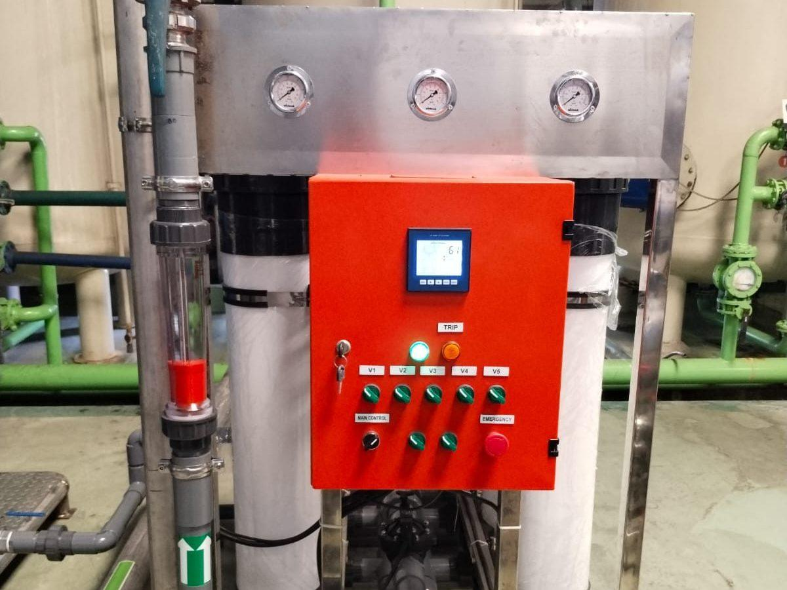
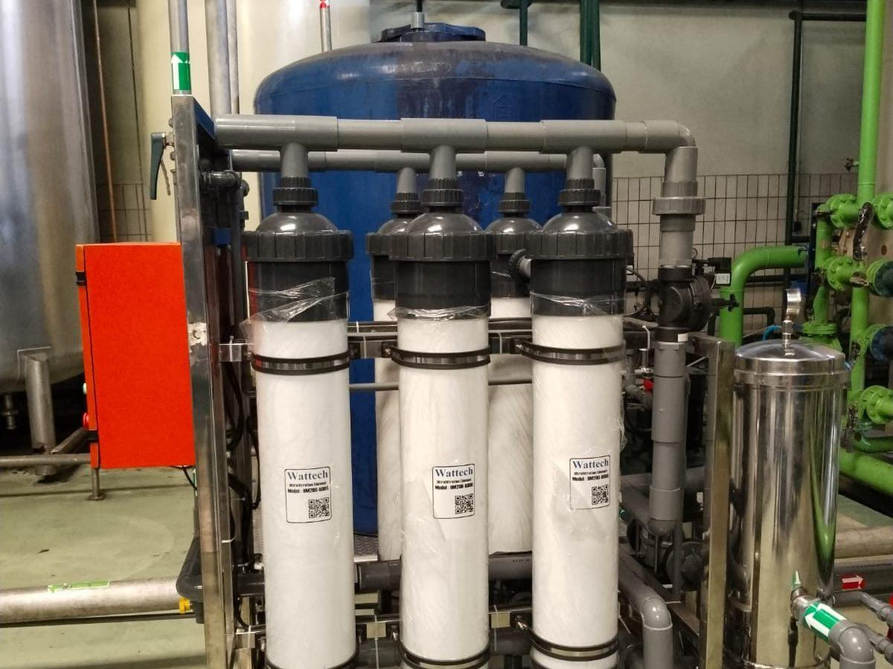
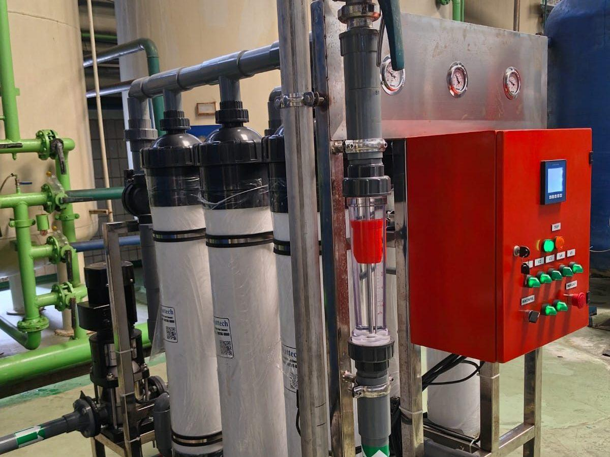
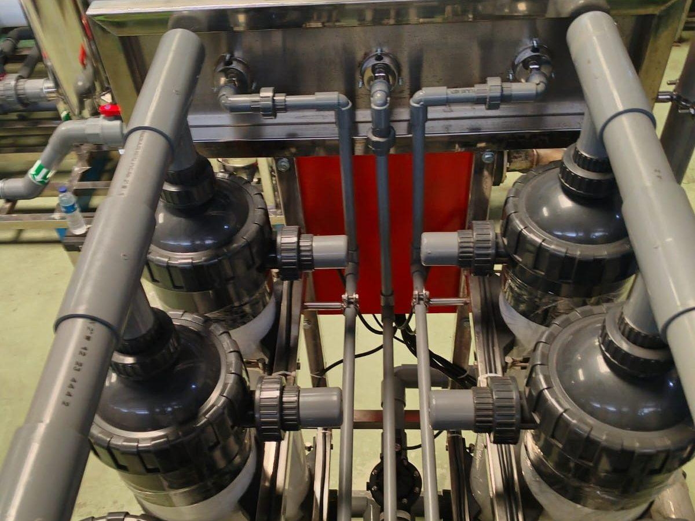
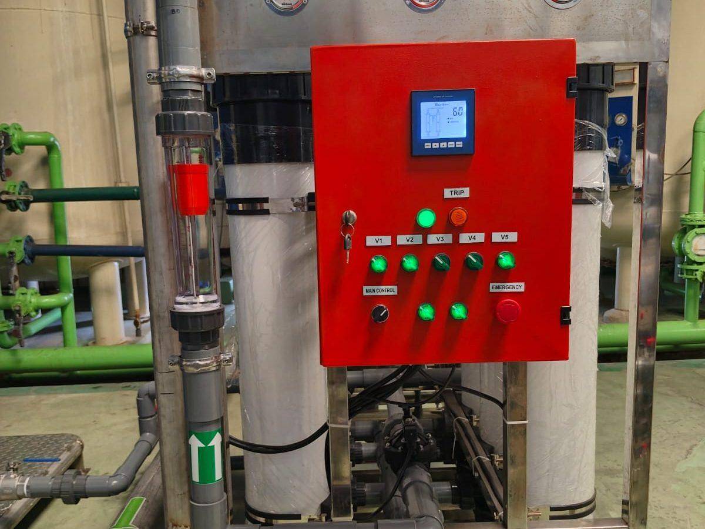
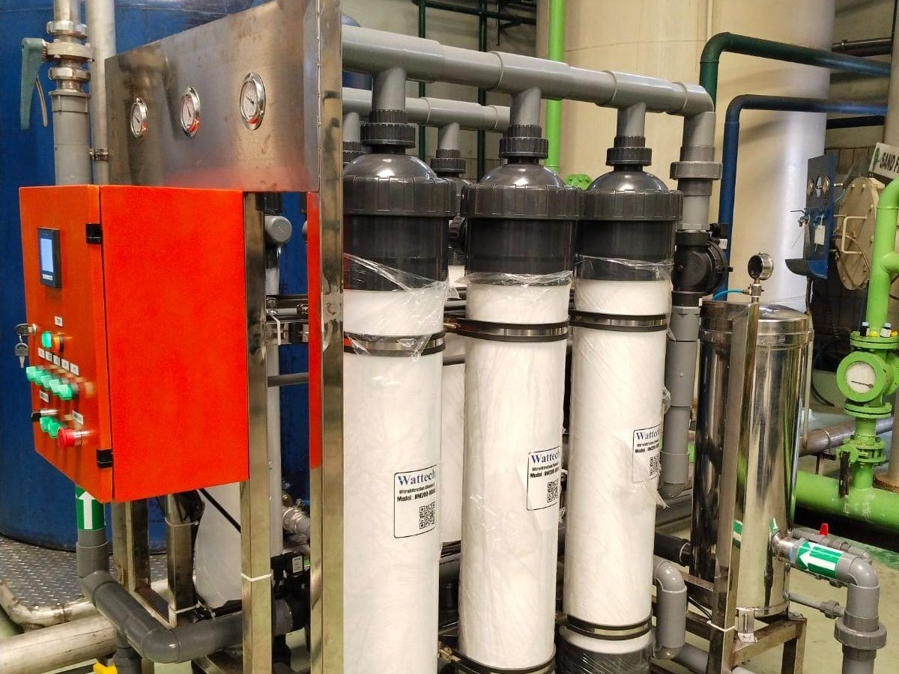

| Klien | PT Sinar Sosro — Produsen teh botol terbesar di Indonesia |
|---|---|
| Lokasi | Pabrik PT Sinar Sosro — Bekasi, Jawa Barat |
| Tipe Sistem | Brackish Water RO + Ultrafiltrasi (UF) — air proses produksi |
| Kapasitas Produk | 30 m³/jam (~720 m³/hari operasi 24 jam) |
| Sumber Air | Air sumur dalam dengan TDS dan hardness fluktuatif musiman |
| Kualitas Output | TDS < 30 ppm, mikroba 0 CFU/100 mL — sesuai standar food grade |
| Konfigurasi | Pre-treatment + UF + BWRO 2-pass + UV polishing |
| Tahun Pengerjaan | November 2023 (sistem terbaru); kemitraan TSM-Sosro berlangsung lebih dari satu dekade |
| Status | Aktif dengan kontrak service jangka panjang dan suplai membran rutin |
Latar Belakang Proyek
PT Sinar Sosro adalah produsen teh botol terbesar di Indonesia dan telah menjadi salah satu brand minuman ikonik nasional sejak 1974. Skala produksi yang sangat besar membutuhkan pasokan air proses dengan kualitas konsisten 24/7 — air bukan sekadar utilitas, tapi bahan baku yang langsung mempengaruhi rasa, aroma, dan kualitas produk akhir.
Dalam industri minuman teh, air mendominasi produk akhir (>95% volume produk adalah air). Variasi sekecil apapun pada kualitas air — TDS yang fluktuatif, hardness yang mempengaruhi ekstraksi tanin, atau klorin sisa yang mengubah aroma teh — dapat berdampak signifikan pada konsistensi rasa antar batch. Inilah mengapa Sosro memilih membangun sistem water treatment dedicated dengan engineering tier-1.
Kemitraan TSM dengan Sosro telah berlangsung lebih dari satu dekade. Selama periode ini, TSM telah membangun, meng-upgrade, dan mendukung beberapa unit sistem RO di pabrik-pabrik Sosro, dengan suplai membran dan kimia rutin sebagai bagian dari kontrak service jangka panjang.
Tantangan Industri Minuman
Industri minuman F&B memiliki persyaratan water treatment yang unik dan berbeda dari industri lain:
1. Konsistensi Kualitas Lintas Musim
Air sumur Indonesia mengalami fluktuasi musiman — TDS dan hardness biasanya naik di musim kemarau ketika muka air tanah turun, dan turun di musim hujan. Sistem treatment harus mampu memberikan output yang konsisten meskipun kualitas feed berubah ±30%. Ini berarti pre-treatment yang adaptif dan kontrol RO yang pintar.
2. Standar Mikrobiologi Food Grade
Produk minuman tidak boleh mengandung mikroba patogen. Sistem air proses harus mencegah biofilm di pipa distribusi, tangki, dan valve. Material kontak air harus food-grade (SS-304/316L), dan layout pipa harus dirancang untuk drainability lengkap saat sanitasi.
3. Operasi 24/7 dengan Tolerance Minimum Downtime
Lini produksi minuman beroperasi continuously dengan sangat sedikit toleransi untuk shutdown air. Penghentian pasokan air tengah produksi berarti batch reject dan kerugian besar. Sistem harus dirancang dengan redundancy yang memungkinkan maintenance tanpa shutdown total.
4. Tidak Ada Klorin Sisa di Air Produk
Klorin yang umumnya berfungsi sebagai disinfektan dapat bereaksi dengan polifenol teh menghasilkan rasa dan aroma yang tidak diinginkan. Sistem disinfeksi harus mengandalkan UV atau ozon yang tidak meninggalkan residu di air produk.
Solusi yang Diimplementasikan
TSM merancang sistem BWRO + UF terintegrasi yang memenuhi semua persyaratan tersebut:
Pre-treatment Bertingkat
- Aerasi + iron-manganese removal — Untuk air sumur dengan kandungan Fe dan Mn
- Multi-media filter dual-bed pasir-antrasit dengan automatic backwash
- Karbon aktif untuk dechlorination dan penghilangan organik
- Softener duplex untuk hardness control — kritis untuk umur membran RO
Ultrafiltrasi (UF)
Sebagai pre-treatment akhir sebelum RO, UF hollow fiber PVDF memberikan SDI <3 yang konsisten dan menahan bakteri serta virus. Auto backwash setiap 30 menit dan CEB harian dengan klorin (yang kemudian di-dechlorinate sebelum RO) menjaga produktivitas membran UF stabil.
BWRO 2-Pass
- Pass 1 — Membran Dow Filmtec BW30-400 dengan recovery 75% dan rejection ~99%
- Pass 2 — Polishing membran LPRO untuk mengejar TDS <30 ppm konsisten
- High-pressure pump Grundfos CR multi-stage dengan VFD untuk efisiensi energi
UV Polishing & Distribution
Output RO melewati UV sterilizer 254nm dengan dosis 60 mJ/cm² sebelum distribusi ke lini produksi. Loop distribusi menggunakan SS-316L sanitary dengan velocity 1,5-2 m/s untuk mencegah biofilm. Tidak ada dead-leg yang memungkinkan stagnasi.
Hasil & Dampak Operasional
Sistem BWRO + UF di pabrik Sosro telah beroperasi konsisten dengan hasil sebagai berikut:
- Konsistensi kualitas — TDS output 25-30 ppm year-round, tidak ada variasi yang dapat dideteksi rasa antar batch produk
- Mikrobiologi — 0 CFU/100 mL di semua user point selama operasi, lulus audit sanitasi rutin Sosro
- Availability — >99% — kontrak service preventive memastikan tidak ada unplanned downtime
- Penghematan biaya — Konfigurasi 2-pass dengan recovery tinggi menurunkan konsumsi air baku dibanding sistem RO biasa
- Umur membran — 6-7 tahun konsisten, dengan suplai membran rutin oleh TSM sebagai bagian dari kontrak
Yang lebih penting dari angka teknis: kemitraan jangka panjang yang stabil. TSM tidak hanya menjadi vendor sistem, tetapi partner teknologi water treatment Sosro yang membantu mereka mempertahankan kualitas brand selama lebih dari satu dekade.
Lessons Learned untuk Industri Minuman
- UF sebagai pre-treatment standar untuk F&B — UF menggantikan multi-media filter konvensional + cartridge filter dengan kualitas yang jauh lebih konsisten dan SDI yang lebih rendah.
- 2-pass RO untuk konsistensi rasa — Untuk industri minuman premium, investasi tambahan untuk pass 2 RO terbayar dari konsistensi rasa antar batch dan menurunnya rework batch yang gagal QC.
- UV bukan ozon untuk teh dan kopi — Ozon dapat oksidasi polifenol yang menjadi citra teh; UV adalah pilihan disinfeksi yang lebih netral untuk produk berbasis ekstraksi tanaman.
- Kontrak service jangka panjang — Untuk industri 24/7, nilai utama bukan hanya peralatan tapi keandalan operasional. Service contract dengan SLA tegas dan suplai consumable rutin adalah investment yang masuk akal.
- Audit-ready documentation — Industri F&B besar di-audit rutin (internal QA, BPOM, customer audit). Sistem yang dibangun TSM datang dengan dokumentasi lengkap yang siap untuk audit.
Galeri Foto Proyek
Foto sistem dan instalasi di lokasi:





Pertanyaan yang Sering Diajukan
Apa beda BWRO untuk Sosro dengan RO industri biasa?
Tiga perbedaan utama: (1) Material food-grade — semua kontak air SS-304/316L sanitary, gasket FKM food-grade. (2) Konfigurasi 2-pass untuk konsistensi rasa — RO biasa cukup 1-pass. (3) Disinfeksi UV bukan klorin/ozon karena residual bisa mempengaruhi rasa teh. Plus dokumentasi food safety yang siap untuk audit BPOM dan customer audit.
Berapa lama umur membran RO di sistem F&B yang beroperasi 24/7?
Dengan pre-treatment lengkap (UF + softener) dan kimia anti-scalant tepat, membran Dow Filmtec di sistem Sosro bertahan 6-7 tahun konsisten — di atas rata-rata industri yang typical 4-5 tahun. Kunci: pre-treatment yang tidak under-designed dan operating condition yang stabil.
Bagaimana TSM menangani fluktuasi kualitas air sumur musiman?
Tiga lapis: (1) Pre-treatment yang dirancang dengan margin untuk worst-case (musim kemarau dengan TDS dan hardness tertinggi). (2) Antiscalant dosing yang otomatis disesuaikan berdasarkan reading conductivity. (3) Recovery RO yang dapat di-adjust antara 70-80% sesuai kualitas feed. Operator hanya perlu input hasil analisis air bulanan dan sistem otomatis menyesuaikan.
Apakah sistem ini cocok untuk pabrik minuman/F&B lain?
Sangat cocok untuk produk yang sensitif terhadap kualitas air: teh, kopi, sari buah, jus, susu, kecap, saus. Untuk produk yang lebih toleran terhadap variasi air (mineral water, bir), konfigurasi dapat lebih sederhana. Setiap proyek F&B kami dimulai dengan analisis spesifik produk dan target sensorik.
Berapa biaya investasi sistem ini untuk pabrik F&B menengah?
Untuk kapasitas 10-30 m³/jam dengan pre-treatment lengkap, UF, BWRO 2-pass, dan UV polishing: investasi sekitar Rp 1,5-3,5 milyar tergantung level otomasi dan brand komponen. ROI biasanya 4-6 tahun dari penghematan biaya treatment kimia, peningkatan konsistensi produk, dan pengurangan reject batch.
Tertarik Solusi Serupa untuk Operasi Anda?
Tim engineering TSM siap mendiskusikan kebutuhan water treatment Anda dengan referensi proyek serupa yang sudah terbukti. Konsultasi awal gratis tanpa komitmen.
📋 Konsultasi Proyek Anda →